Міністерство оборони України • Збройні Сили України
МЕТОДИЧНИЙ ПОСІБНИК
Організація психофізіологічного дослідження із застосуванням поліграфа у МО та ЗС України
ПЕРЕДМОВА
Кадрова безпека є однією з ключових складових ефективного функціонування Міністерства оборони України (далі — МО України) та Збройних Сил України (далі — ЗС України). Мінімізація ризиків та загроз, пов'язаних з персоналом, безпосередньо впливає на боєздатність підрозділів, ефективність органів військового управління та спроможність виконувати покладені завдання. В умовах збройної агресії проти України ці питання набувають критичного значення.
Психофізіологічне дослідження із застосуванням поліграфа (далі — ПФДЗП) є одним із інструментів, що використовуються у секторі безпеки та оборони для отримання додаткової інформації при вирішенні кадрових питань та проведенні службових розслідувань. Досвід провідних оборонних відомств зарубіжних країн підтверджує доцільність використання цього методу як допоміжного засобу у системі кадрового забезпеки.
Цей методичний посібник розроблено з метою надання практичної допомоги посадовим особам МО України та ЗС України, які виступають ініціаторами проведення ПФДЗП, а також командирам (начальникам), керівникам органів військового управління та кадровим органам, які здійснюють організаційне забезпечення цієї процедури. Посібник систематизує порядок дій на кожному етапі, роз'яснює розподіл відповідальності між учасниками процесу та надає практичні рекомендації.
Матеріали посібника базуються на положеннях Інструкції з організації та проведення психофізіологічного дослідження персоналу із застосуванням поліграфа у МО України та ЗС України, затвердженої наказом МО України від 14.04.2015 № 164 (у редакції наказу МО України від 22.07.2019 № 394), зареєстрованої в Міністерстві юстиції України 29 квітня 2015 року за № 477/26922 (далі — Інструкція).
Посібник узагальнює практичний досвід організації ПФДЗП у системі МО та ЗС України та враховує типові проблеми, з якими стикаються ініціатори та організатори процедури. Серед найбільш поширених труднощів: нечітке розуміння процедури оформлення завдання, невизначеність щодо обсягу повноважень та меж відповідальності ініціатора, недостатня обізнаність щодо правового статусу результатів дослідження, а також організаційні питання підготовки суб'єкта.
Посібник структуровано таким чином, щоб посадова особа могла швидко знайти відповідь на практичне питання щодо конкретного етапу організації дослідження. Кожний розділ є логічно завершеним блоком інформації, який може використовуватися як самостійно, так і в контексті загального алгоритму дій.
Посібник не замінює Інструкцію та не може тлумачитися як такий, що змінює, доповнює або обмежує її норми. У разі розбіжностей між положеннями цього посібника та Інструкції пріоритет мають положення Інструкції. Посібник підлягає перегляду та оновленню у разі внесення змін до нормативно-правових актів, що регулюють проведення ПФДЗП.
РОЗДІЛ 1. ЗАГАЛЬНІ ПОЛОЖЕННЯ
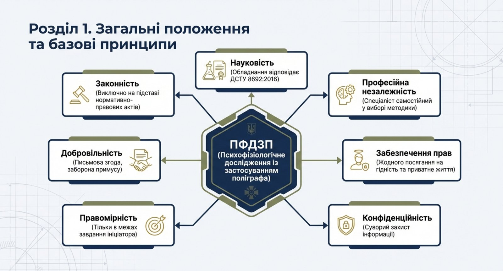
1.1. Мета посібника
Цей методичний посібник призначений для роз'яснення порядку організації та проведення ПФДЗП у системі МО України та ЗС України. Його головна мета — забезпечити посадових осіб, які беруть участь в організації дослідження, чітким та зрозумілим алгоритмом дій на кожному етапі процедури.
Посібник покликаний усунути типові труднощі, з якими стикаються ініціатори дослідження: невизначеність щодо порядку оформлення документів, нечітке розуміння обсягу повноважень та відповідальності, а також недостатня обізнаність щодо обмежень застосування результатів ПФДЗП.
1.2. Сфера застосування
Положення посібника поширюються на організацію ПФДЗП усіх категорій осіб, визначених Інструкцією, та застосовуються у діяльності:
- ініціаторів дослідження — посадових осіб, уповноважених ініціювати проведення ПФДЗП;
- кадрових органів — структурних підрозділів, що здійснюють організаційний супровід процедури;
- командирів (начальників) — посадових осіб, у підпорядкуванні яких перебувають суб'єкти дослідження;
- спеціалістів поліграфа — співробітників структурного підрозділу Науково-методичного центру кадрової політики МО України (далі — НМЦ КП), які безпосередньо проводять дослідження.
Посібник може бути використаний також іншими посадовими особами МО та ЗС України, які потребують інформації про порядок організації ПФДЗП.
1.3. Нормативно-правова база
Організація та проведення ПФДЗП у МО та ЗС України здійснюється на підставі та відповідно до:
- Конституції України, зокрема статті 28, яка гарантує, що жодна особа без її добровільної згоди не може бути піддана медичним, науковим чи іншим дослідженням;
- Законів України «Про Збройні Сили України», «Про військовий обов'язок і військову службу», «Про державну службу», «Про запобігання корупції», «Про очищення влади», «Про інформацію», «Про захист персональних даних»;
- Положення про проходження громадянами України військової служби у Збройних Силах України, затвердженого Указом Президента України від 10.12.2008 № 1153;
- Інструкції з організації та проведення психофізіологічного дослідження персоналу із застосуванням поліграфа у МО України та ЗС Україні (наказ МО України від 14.04.2015 № 164, у редакції наказу від 22.07.2019 № 394);
- ДСТУ 8692:2016, який визначає вимоги до поліграфів. Використання поліграфа, що не відповідає зазначеним вимогам, забороняється;
- інших нормативно-правових актів, що регулюють відносини у сфері кадрової безпеки, захисту інформації та проходження військової служби.
1.4. Основні принципи
Проведення ПФДЗП базується на принципах, визначених Інструкцією:
- законність — дослідження проводиться виключно на підставі та в порядку, передбаченому нормативно-правовими актами. Будь-яке дослідження без належного правового обґрунтування є неприпустимим;
- добровільність — обов'язковою передумовою є наявності добровільної письмової згоди суб'єкта. Примушування до проходження дослідження у будь-якій формі забороняється;
- правомірність — дослідження проводиться тільки за наявності відповідного завдання ініціатора та в межах визначеного в завданні орієнтовного переліку питань. Вихід за межі завдання не допускається;
- конфіденційність — інформація про факт, хід та результати дослідження є конфіденційною. Усі особи, яким стала відома ця інформація, зобов'язані забезпечити її захист;
- забезпечення прав і свобод людини — під час дослідження не допускається втручання у приватне та сімейне життя, посягання на свободу думки, совісті й релігії, будь-які дії, що загрожують недоторканності особи або принижують її честь і гідність;
- професійна незалежність — спеціаліст поліграфа є незалежним від будь-якого впливу, тиску чи втручання у його професійну діяльність. Він самостійно обирає методику та формулює питання відповідно до завдання;
- науковість — застосовуються лише науково обґрунтовані методики, а обладнання відповідає встановленим стандартам.
РОЗДІЛ 2. ТЕРМІНИ ТА ВИЗНАЧЕННЯ
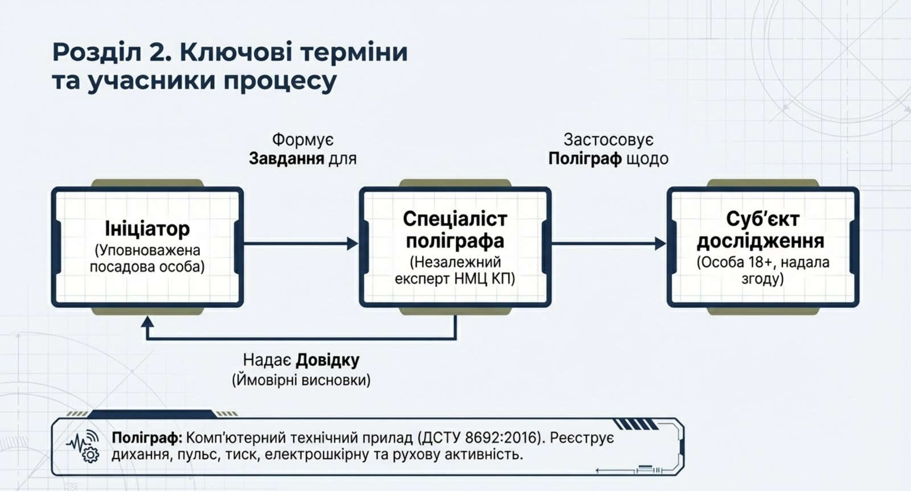
У цьому посібнику терміни вживаються у значеннях, визначених Інструкцією. Для зручності посадових осіб нижче наведено стислі пояснення ключових понять, необхідних для розуміння процедури.
Поліграф — комп'ютерний технічний прилад з відповідним програмним забезпеченням, що має сертифікацію виробника та відповідає вимогам ДСТУ 8692:2016. Прилад здійснює реєстрацію змін психофізіологічного реагування людини у відповідь на пред'явлені за спеціальною методикою психологічні стимули. Поліграф не завдає шкоди життю, здоров'ю людини та навколишньому середовищу. Прилад має не менше п'яти каналів реєстрації психофізіологічного реагування, включаючи канал виявлення протидії. На практиці сучасні поліграфи реєструють параметри дихання (верхнє та нижнє), електрошкірну активність, серцево-судинну активність, рухову активність та інші показники.
Психофізіологічне дослідження із застосуванням поліграфа (ПФДЗП) — нешкідливе для життя і здоров'я людини опитування з використанням комп'ютерного технічного засобу, під час якого здійснюється аналіз динаміки психофізіологічних реакцій суб'єкта дослідження у відповідь на психологічні стимули, представлені у формі запитань, варіантів відповідей, предметів, схем, фотографій тощо, що дає можливість виявити симуляцію і представити зареєстровані результати в аналоговій та/або цифровій формі.
Ініціатор дослідження — посадова особа, уповноважена відповідно до Інструкції ініціювати проведення ПФДЗП. Ініціатором також може бути особа, щодо якої висунуто сумніви стосовно правдивості наданої нею інформації, у разі наявності її письмового клопотання. Повний перелік уповноважених посадових осіб визначено у розділі 5 цього посібника.
Суб'єкт дослідження — особа, щодо якої проводиться ПФДЗП. Суб'єктом може бути військовослужбовець, працівник ЗС України, державний службовець або кандидат на посаду в системі МО та ЗС Україні. Суб'єкт повинен досягти 18-річного віку, бути визначеним у завданні, не мати медичних протипоказань та надати добровільну письмову згоду на проходження процедури.
Спеціаліст поліграфа — співробітник структурного підрозділу НМЦ КП, на якого покладено функції проведення дослідження. Спеціаліст має освітньо-кваліфікаційний рівень не нижче ніж бакалавр, пройшов відповідну підготовку, має документ, що засвідчує проходження підготовки, та володіє навичками роботи з поліграфом і методиками проведення дослідження.
Завдання на проведення дослідження — офіційний документ встановленої форми, яким ініціатор визначає суб'єкта дослідження, підстави та мету проведення, обставини, що підлягають з'ясуванню, та орієнтовний перелік питань. Існують дві форми завдання: для кадрових рішень та для службових розслідувань (перевірок).
Довідка — документ, у якому викладено письмові ймовірні та орієнтувальні висновки спеціаліста поліграфа за результатами ПФДЗП. Довідка є основним підсумковим документом, що передається ініціатору.
Матеріали дослідження — сукупність документів та носіїв інформації, що утворюються у процесі організації та проведення ПФДЗП: завдання (або письмове клопотання особи), заява про надання добровільної згоди, довідка (у електронному та друкованому вигляді), поліграми, аудіо- та відеофайли дослідження, а також загальні відомості про факт проведення дослідження, зафіксовані на носіях інформації.
РОЗДІЛ 3. МЕТА ТА ЗАВДАННЯ ДОСЛІДЖЕННЯ
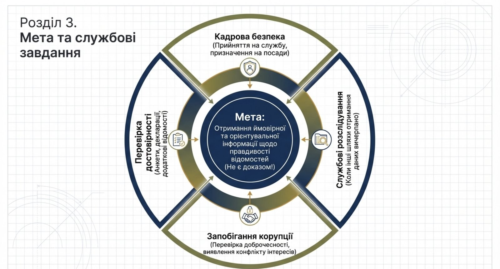
3.1. Мета дослідження
Метою проведення ПФДЗП є отримання ймовірної та орієнтувальної інформації, яку іншим способом отримати неможливо, для з'ясування ступеня правдивості та повноти відомостей, наданих суб'єктом дослідження. Отримана інформація використовується у службовій діяльності посадових осіб МО та ЗС України для формування внутрішнього сприйняття ситуації.
Важливо розуміти, що ПФДЗП не є засобом встановлення істини або доказування. Метод дозволяє виявити зони невідповідності між заявленою суб'єктом інформацією та його психофізіологічними реакціями. Це створює підстави для подальшої поглибленої перевірки, а не для безпосередніх висновків.
3.2. Завдання дослідження
Основними завданнями ПФДЗП, визначеними Інструкцією, є:
- забезпечення кадрової безпеки, прозорості та об'єктивності під час підготовки та прийняття кадрових рішень — при прийнятті (поновленні) на військову службу за контрактом, при призначенні (переміщенні) осіб офіцерського складу на посади номенклатури призначення Міністра оборони України, при вступі громадян на державну службу у структурні підрозділи МО та ЗС України;
- підвищення ефективності проведення службових розслідувань (перевірок) — коли є документально підтверджені сумніви у правдивості інформації, наданої особою, стосовно обставин, які перевіряються, та коли іншим шляхом отримати будь-які відомості щодо цих обставин неможливо;
- виявлення, протидія та запобігання корупції та інших ризиків, що можуть виникати у процесі службової діяльності — встановлення фактів приховування інформації, виявлення конфлікту інтересів, перевірка доброчесності;
- отримання додаткових відомостей для перевірки достовірності та повноти інформації, наданої особою, зокрема під час заповнення анкет, декларацій та інших документів.
3.3. Роль ПФДЗП у системі кадрової безпеки
ПФДЗП є одним з елементів комплексної системи забезпечення кадрової безпеки. Дослідження доповнює інші методи перевірки та оцінки персоналу, але не замінює їх. Його результати мають розглядатися у сукупності з іншими наявними даними та обставинами.
Використання ПФДЗП виправдане у ситуаціях, коли традиційні методи перевірки (вивчення документів, співбесіди, запити до відповідних органів) не забезпечують достатньої повноти інформації, необхідної для прийняття обґрунтованого рішення. Дослідження створює додатковий інформаційний канал, який сприяє більш зваженому підходу до кадрових питань.
Ефективність ПФДЗП як інструменту кадрової безпеки підтверджена багаторічною практикою застосування у силових відомствах багатьох країн світу для добору кадрів, проведення внутрішніх розслідувань та запобігання корупції. Водночас, як і будь-який інструмент, ПФДЗП має обмеження, які необхідно враховувати при використанні його результатів (див. розділ 14).
РОЗДІЛ 4. ПІДСТАВИ ДЛЯ ПРОВЕДЕННЯ ДОСЛІДЖЕННЯ
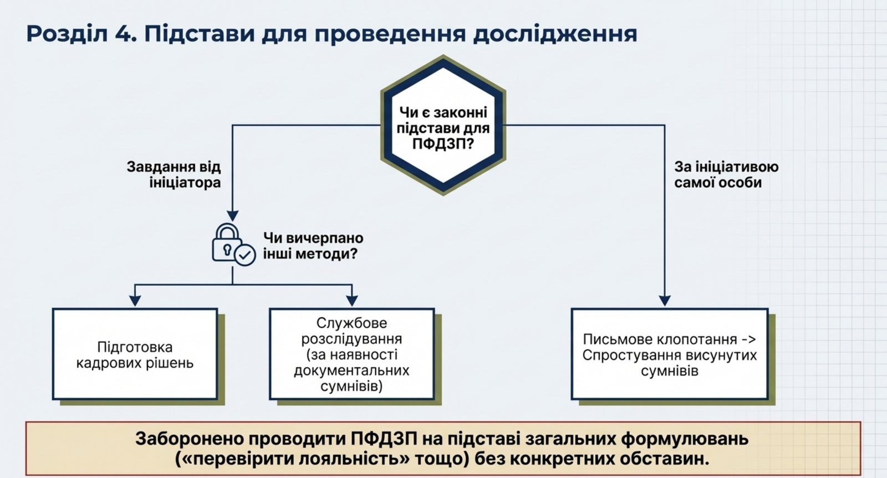
Інструкція чітко визначає підстави для проведення ПФДЗП. Дослідження не може бути проведене довільно, без належного правового обґрунтування.
4.1. Завдання від ініціатора
Основною підставою для проведення ПФДЗП є завдання від ініціатора дослідження. Завдання готується за встановленою формою і має містити: анкетні дані суб'єкта, обставини, з приводу яких передбачається проведення дослідження, мету проведення та орієнтовний перелік питань, що підлягають з'ясуванню.
Завдання оформлюється у двох варіантах залежно від напряму дослідження: для кадрових рішень або для службових розслідувань (перевірок). Кожний варіант має свою встановлену форму (додатки 1 та 2 до Інструкції).
Ініціатор повинен забезпечити конкретність та обґрунтованість завдання. Загальні формулювання на кшталт «перевірити доброчесність» або «з'ясувати рівень лояльності» без зазначення конкретних обставин є недостатніми. Завдання має містити чіткий опис ситуації, що потребує дослідження, та обґрунтування неможливості отримання необхідної інформації іншим шляхом.
4.2. Письмове клопотання особи
Другою підставою є висловлене особою у письмовій формі бажання за допомогою поліграфа спростувати висунуті їй сумніви щодо правдивості наданої нею інформації. У цьому випадку ініціатором дослідження виступає сама особа.
Клопотання подається у довільній формі та має містити: прізвище, ім'я, по батькові заявника, його посаду та звання, зміст сумнівів, які він бажає спростувати, та чітко висловлене бажання пройти ПФДЗП.
4.3. Напрями проведення дослідження
ПФДЗП проводиться за такими напрямами:
- при підготовці та прийнятті кадрових рішень — прийняття (поновлення) на військову службу за контрактом, призначення (переміщення) осіб офіцерського складу на посади, вступ громадян на державну службу;
- при проведенні службових розслідувань (перевірок) — за наявності документально підтверджених сумнівів у правдивості інформації;
- за ініціативою самої особи — для спростування висунутих сумнівів.
Напрям дослідження визначає форму завдання та коло питань, що можуть бути включені до дослідження. Вихід за межі визначеного напряму не допускається.
4.4. Практичні рекомендації щодо визначення підстав
При визначенні підстав для проведення ПФДЗП ініціатору рекомендується послідовно відповісти на такі запитання:
- Чи існують конкретні обставини, які потребують перевірки або з'ясування? Загальне бажання «перевірити» особу без зазначення конкретних обставин не є достатньою підставою.
- Чи відповідають ці обставини одному з напрямів, визначених Інструкцією (кадрові рішення, службове розслідування, спростування сумнівів за ініціативою особи)?
- Чи використано інші доступні методи отримання інформації (вивчення документів, співбесіди, запити, службові перевірки)? Чи є їх результати достатніми для прийняття обґрунтованого рішення?
- Чи є обставини, за яких отримання необхідної інформації іншим шляхом є неможливим або недостатнім?
Позитивні відповіді на всі зазначені запитання свідчать про наявність належних підстав для ініціювання ПФДЗП. У разі сумнівів рекомендується проконсультуватися з юридичною службою або структурним підрозділом НМЦ КП.
Окремо слід наголосити на важливості документального обґрунтування підстав. Завдання має містити не лише формальне зазначення підстави, але й стислий опис фактичних обставин, що обумовлюють необхідність дослідження. Це захищає як ініціатора, так і суб'єкта, забезпечуючи прозорість процедури.
РОЗДІЛ 5. ІНІЦІАТОРИ ДОСЛІДЖЕННЯ
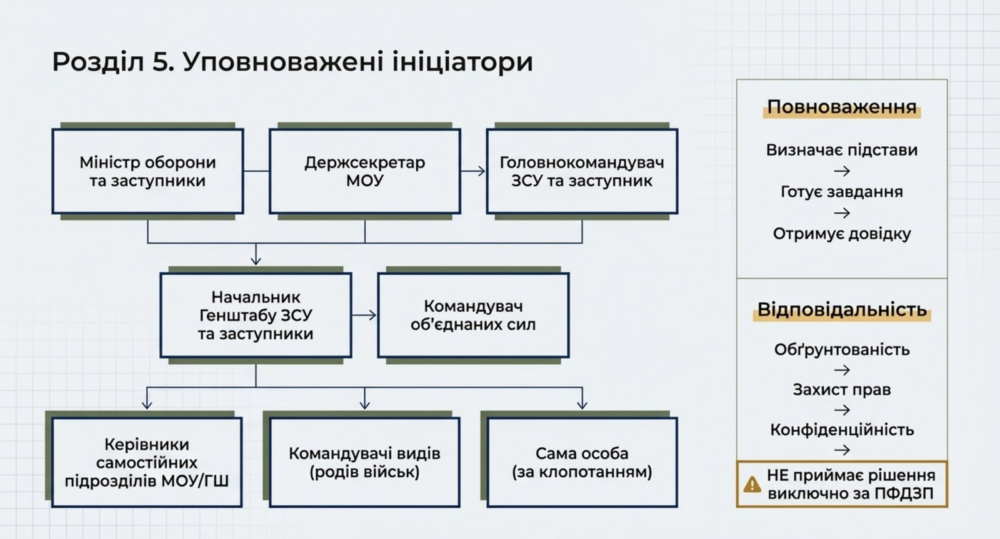
5.1. Перелік уповноважених осіб
Відповідно до Інструкції (у редакції наказу від 22.07.2019 № 394), ініціаторами проведення ПФДЗП можуть виступати:
- Міністр оборони України та його заступники;
- державний секретар Міністерства оборони України;
- Головнокомандувач Збройних Сил України та його заступник;
- начальник Генерального штабу Збройних Сил України та його заступники;
- Командувач об'єднаних сил Збройних Сил України;
- керівники самостійних структурних підрозділів апарату Міноборони та Генерального штабу ЗС України;
- командувачі видів (окремих родів військ (сил));
- особа, щодо якої висунуто сумніви щодо правдивості наданої нею інформації — за наявності її письмового клопотання про проведення дослідження з метою спростування цих сумнівів.
Інші посадові особи, не включені до цього переліку, не мають повноважень виступати ініціаторами ПФДЗП. У разі потреби проведення дослідження щодо підлеглого персоналу, командир (начальник), який не входить до переліку ініціаторів, має звернутися до уповноваженої посадової особи вищого рівня.
5.2. Повноваження ініціатора
Ініціатор дослідження:
- визначає наявність підстав для проведення дослідження та обирає відповідний напрям;
- формулює обставини, що підлягають з'ясуванню, та орієнтовний перелік питань, які мають бути досліджені;
- готує та підписує завдання на проведення дослідження за відповідною встановленою формою;
- подає завдання на затвердження у встановленому порядку;
- забезпечує інформування суб'єкта про необхідність проходження дослідження та загальний порядок процедури;
- сприяє отриманню від суб'єкта добровільної письмової згоди;
- узгоджує зі спеціалістом поліграфа перелік питань (психологічних стимулів) для проведення дослідження;
- отримує довідку з результатами дослідження;
- використовує результати виключно у межах, визначених Інструкцією.
5.3. Відповідальність ініціатора
Ініціатор несе персональну відповідальність за:
- обґрунтованість рішення про проведення дослідження та відповідність підстав вимогам Інструкції;
- правильність та повноту оформлення завдання;
- дотримання порядку погодження та затвердження завдання;
- забезпечення прав суб'єкта дослідження, зокрема принципу добровільності;
- конфіденційність інформації про факт та результати дослідження;
- використання результатів виключно як відомостей ймовірного та орієнтувального характеру;
- недопущення прийняття кадрових або адміністративних рішень виключно на підставі результатів ПФДЗП.
РОЗДІЛ 6. СУБ'ЄКТИ ДОСЛІДЖЕННЯ
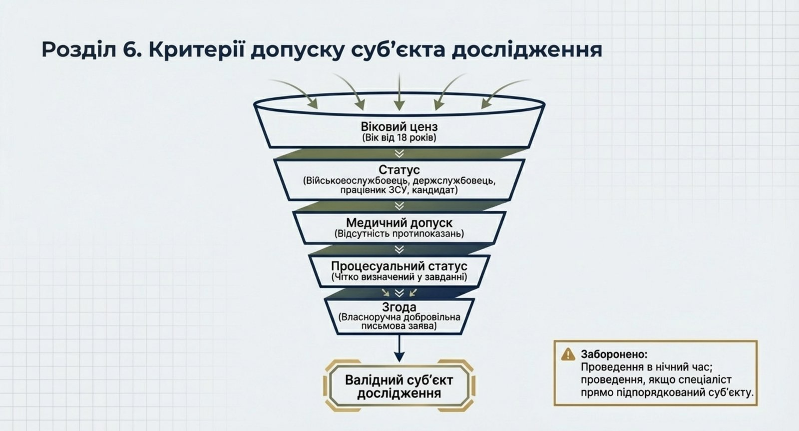
6.1. Вимоги до суб'єкта
Суб'єктом ПФДЗП може бути особа, яка одночасно відповідає таким вимогам:
- досягла 18-річного віку;
- є військовослужбовцем, працівником ЗС України, державним службовцем або кандидатом на посаду в системі МО та ЗС України;
- визначена у завданні на проведення дослідження;
- не має медичних протипоказань для проходження процедури;
- надала добровільну письмову згоду на проходження дослідження.
Невідповідність хоча б одній із зазначених вимог виключає можливість проведення дослідження щодо цієї особи.
6.2. Обмеження
Дослідження не проводиться щодо осіб, які не досягли 18-річного віку або відмовилися від участі. Повний перелік медичних протипоказань та обставин, за яких дослідження не проводиться, наведено у розділі 9.1 цього посібника. До основних медичних обмежень належать: гострий період соматичних та психічних захворювань, гострий больовий синдром, інтоксикація організму, захворювання з вираженою серцево-судинною або дихальною недостатністю, травми та анатомічні дефекти пальців рук, ампутація верхніх кінцівок, регулярне вживання сильнодіючих або психотропних препаратів, вагітність.
Додатково Інструкція встановлює, що дослідження не проводиться у нічний час. Спеціаліст поліграфа має право відмовити у проведенні або відкласти дослідження, якщо стан суб'єкта не дозволяє забезпечити достовірність результатів.
Якщо спеціаліст поліграфа безпосередньо (прямо) підпорядкований особі, яка є суб'єктом дослідження, процедура проводиться іншим спеціалістом.
6.3. Добровільна згода
Дослідження проводиться виключно за умови добровільної письмової згоди суб'єкта. Заяву про надання згоди суб'єкт заповнює власноручно. Форма заяви встановлена Інструкцією.
У випадку відмови від проходження дослідження процедура не проводиться. Факт відмови фіксується документально. Відмова не може тлумачитися як визнання вини або підстава для будь-яких негативних кадрових чи дисциплінарних рішень. Суб'єкт має право відмовитися від продовження дослідження на будь-якому його етапі.
Командири (начальники) та інші посадові особи не мають права чинити тиск на суб'єкта для отримання його згоди. Будь-які форми примусу — пряме наказування, погрози негативними наслідками у разі відмови, маніпулятивний вплив — є порушенням принципу добровільності та можуть тягти за собою відповідальність.
РОЗДІЛ 7. ОРГАНІЗАЦІЯ ПРОВЕДЕННЯ ДОСЛІДЖЕННЯ
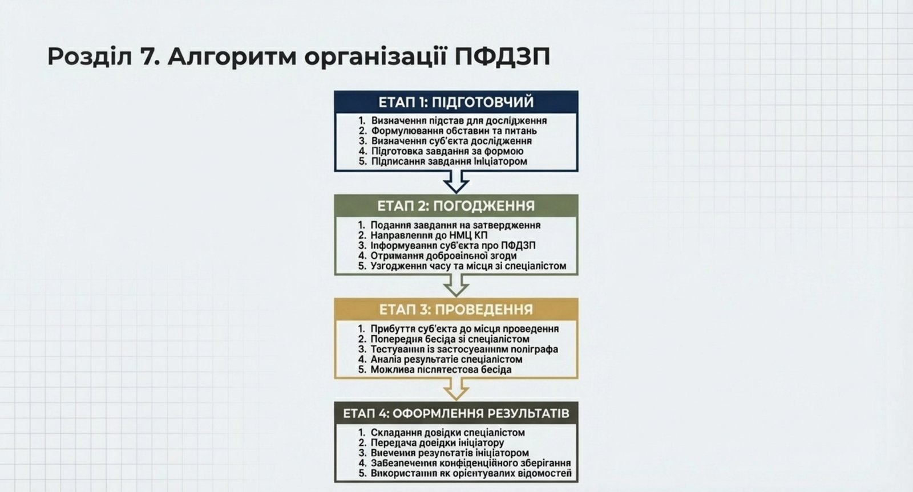
Організація ПФДЗП складається з чотирьох послідовних етапів. Чітке дотримання порядку дій на кожному етапі забезпечує законність процедури та достовірність результатів.
7.1. Підготовчий етап
На підготовчому етапі ініціатор здійснює такі дії:
- Оцінює ситуацію та визначає наявність підстав для проведення дослідження. Переконується, що обставини відповідають напрямам, визначеним Інструкцією, та що отримання необхідної інформації іншим шляхом є неможливим або недостатнім.
- Визначає суб'єкта дослідження та перевіряє його відповідність встановленим вимогам (вік, статус, відсутність очевидних протипоказань).
- Формулює обставини, що підлягають з'ясуванню, та орієнтовний перелік питань. Формулювання мають бути конкретними, чіткими та пов'язаними з підставою для дослідження.
- Готує завдання на проведення дослідження за відповідною встановленою формою. Заповнює всі обов'язкові реквізити.
- Підписує завдання.
Завдання готується у необхідній кількості примірників. Зразок форми завдання наведено у додатку А до цього посібника.
Типові помилки при підготовці завдання, яких слід уникати:
- відсутність конкретних обставин — завдання містить лише загальне формулювання без опису ситуації, що потребує дослідження;
- невідповідність напряму — завдання оформлене за формою для кадрових рішень, тоді як фактично йдеться про службове розслідування, або навпаки;
- відсутність орієнтовного переліку питань — завдання не містить тематичних напрямів для формулювання запитань спеціалістом;
- неповні дані суб'єкта — не зазначено повних анкетних даних, звання та посади;
- відсутність обґрунтування — неможливості отримання інформації іншим шляхом (при проведенні дослідження у рамках службового розслідування).
Ініціатору рекомендується перед підписанням завдання звірити його з чек-листом (додаток Г), щоб переконатися у повноті та правильності оформлення.
7.2. Етап погодження
Підписане ініціатором завдання подається на затвердження у встановленому Інструкцією порядку. Затверджене завдання надається до структурного підрозділу НМЦ КП.
Одночасно з направленням завдання ініціатор або уповноважена ним особа:
- інформує суб'єкта дослідження про необхідність проходження ПФДЗП та доводить до нього загальну інформацію про порядок проведення;
- роз'яснює суб'єкта його права, зокрема право на добровільну згоду або відмову;
- отримує від суб'єкта власноручно заповнену заяву про надання добровільної згоди або фіксує факт відмови;
- узгоджує зі спеціалістом поліграфа час та місце проведення дослідження;
- за необхідності надає спеціалісту поліграфа додаткові матеріали та документи, що стосуються обставин дослідження.
7.3. Етап проведення
Безпосереднє проведення ПФДЗП здійснюється спеціалістом поліграфа. На цьому етапі ініціатор забезпечує:
- своєчасне прибуття суб'єкта до визначеного місця проведення дослідження;
- надання спеціалісту поліграфа завдання та необхідних супровідних документів;
- узгодження переліку питань (психологічних стимулів), підготовленого спеціалістом на основі завдання.
Ініціатор не має права бути присутнім під час безпосереднього проведення процедури, впливати на спеціаліста щодо формулювання питань або інтерпретації результатів, а також втручатися у його професійну діяльність у будь-який інший спосіб.
7.4. Етап оформлення результатів
За результатами ПФДЗП спеціаліст поліграфа складає довідку за встановленою формою. Довідка надається ініціатору у визначений Інструкцією строк.
Після отримання довідки ініціатор:
- вивчає ймовірні та орієнтувальні висновки спеціаліста;
- за потреби звертається до спеціаліста за усними поясненнями щодо змісту висновків;
- використовує отриману інформацію відповідно до вимог Інструкції;
- забезпечує конфіденційне зберігання отриманих матеріалів.
РОЗДІЛ 8. РОЗПОДІЛ ВІДПОВІДАЛЬНОСТІ
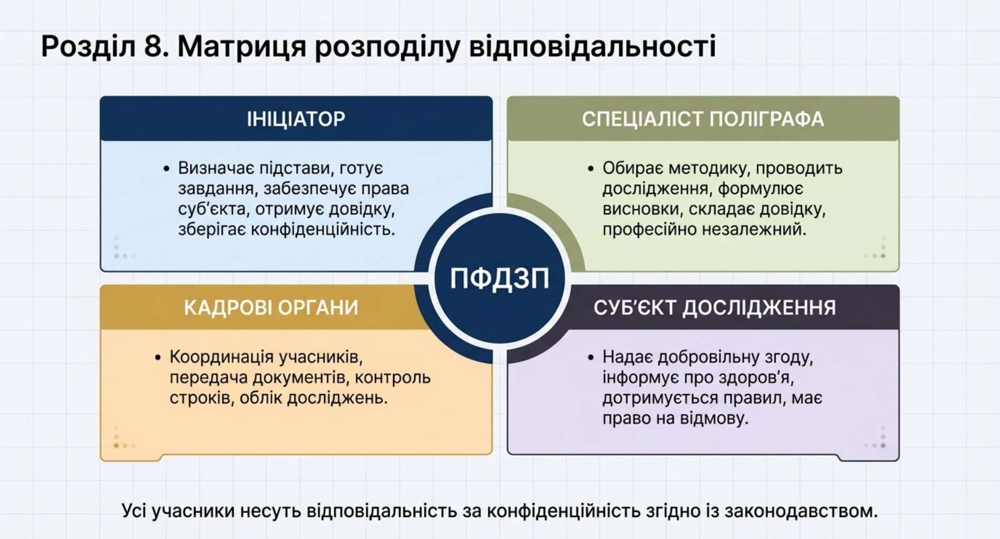
Чіткий розподіл відповідальності між учасниками процесу ПФДЗП є запорукою законності та ефективності процедури.
8.1. Ініціатор
Ініціатор відповідає за наявність та обґрунтованість підстав для проведення дослідження, правильність оформлення завдання, дотримання встановленого порядку погодження та затвердження, забезпечення прав суб'єкта та конфіденційність результатів. Ініціатор зобов'язаний використовувати результати виключно як відомості ймовірного та орієнтувального характеру.
8.2. Спеціаліст поліграфа
Спеціаліст відповідає за якісне та об'єктивне проведення дослідження, дотримання визначених методик, коректне формулювання питань відповідно до завдання, належне оформлення довідки та збереження матеріалів. Спеціаліст є професійно незалежним і не підпорядковується ініціатору щодо вибору методики та інтерпретації результатів.
Спеціаліст поліграфа зобов'язаний:
- перед початком дослідження переконатися у наявності належним чином оформленого та затвердженого завдання;
- перевірити стан здоров'я суб'єкта та наявність добровільної згоди;
- провести попередню бесіду, роз'яснити суб'єкту порядок проведення та його права;
- обрати методику, що найбільш відповідає меті дослідження, та підготувати перелік питань;
- узгодити перелік питань з ініціатором;
- провести тестування з дотриманням усіх методичних вимог;
- забезпечити фіксацію процедури за допомогою аудіо- та/або відеозапису;
- підготувати довідку у встановлений строк;
- передати довідку ініціатору та забезпечити зберігання матеріалів.
Спеціаліст має право відмовити у проведенні або відкласти дослідження, якщо стан суб'єкта не дозволяє забезпечити достовірність результатів, або якщо завдання не відповідає встановленим вимогам.
8.3. Кадрові органи
Кадрові органи відповідають за організаційний супровід: координацію між ініціатором та НМЦ КП, передачу документів, контроль за дотриманням процедурних строків та ведення обліку проведених досліджень.
На практиці роль кадрових органів полягає у забезпеченні безперебійного документообігу та організаційної взаємодії між учасниками процесу. Кадрові органи:
- приймають від ініціатора завдання та забезпечують його передачу за встановленим каналом для затвердження;
- після затвердження направляють завдання до структурного підрозділу НМЦ КП;
- координують графік проведення досліджень з урахуванням завантаженості спеціалістів та потреб ініціаторів;
- ведуть облік проведених досліджень для потреб звітності та контролю;
- сприяють вирішенню організаційних питань, що виникають на різних етапах процедури.
Ефективна робота кадрових органів як координаційної ланки суттєво впливає на оперативність проведення досліджень та дотримання встановлених процедурних строків.
8.4. Суб'єкт дослідження
Суб'єкт зобов'язаний надати достовірну інформацію про стан здоров'я та наявності медичних протипоказань, дотримуватися правил поведінки під час процедури. Має право на інформування про порядок проведення, відмову від участі та отримання відомостей про результати у порядку, визначеному Інструкцією.
8.5. Конфіденційність
Усі особи, яким стало відомо про факт, хід та результати дослідження, зобов'язані забезпечити конфіденційність цієї інформації. За порушення вимог конфіденційності винні особи несуть відповідальність згідно із законодавством України.
РОЗДІЛ 9. ПІДГОТОВКА СУБ'ЄКТА ДОСЛІДЖЕННЯ
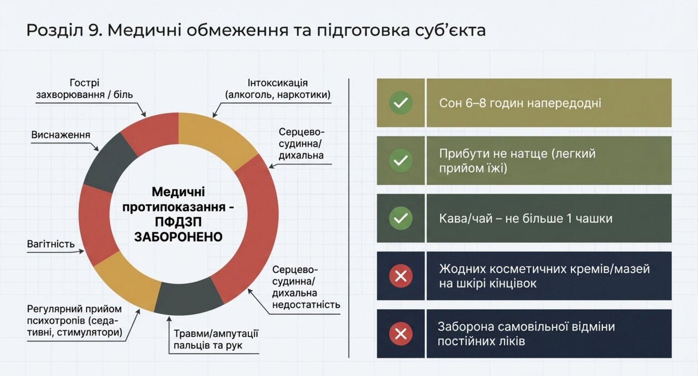
9.1. Медичні обмеження
Перед проведенням ПФДЗП необхідно переконатися у відсутності медичних протипоказань у суб'єкта. Дослідження не проводиться за наявності таких станів та обставин:
- гострий період соматичних та психічних захворювань;
- гострий больовий синдром будь-якої локалізації;
- інтоксикація організму (алкогольна, наркотична, медикаментозна, інша);
- захворювання, що супроводжуються вираженою серцево-судинною або дихальною недостатністю;
- травми, анатомічні дефекти та обмороження пальців рук, ампутація верхніх кінцівок — оскільки це унеможливлює коректне встановлення датчиків електрошкірної активності;
- регулярне вживання сильнодіючих препаратів або психотропних речовин, що впливають на функціонування центральної нервової, серцево-судинної чи дихальної системи, або перебування суб'єкта під впливом зазначених препаратів на момент дослідження;
- вагітність, що підтверджується відповідною медичною довідкою (за винятком випадків, коли дослідження проводиться за ініціативою самого суб'єкта);
- стан вираженої фізичної втоми або емоційного виснаження;
- регулярне недотримання правил поведінки під час проведення дослідження, про які інформується суб'єкт.
Надання медичної довідки є обов'язковою вимогою для підтвердження наявності (або відсутності) у суб'єкта вищезгаданих станів.
Дослідження також не проводиться, якщо:
- спеціаліст поліграфа прямо підпорядкований особі, яка є суб'єктом дослідження;
- суб'єкт дослідження є близькою особою спеціаліста поліграфа;
- існує конфлікт інтересів між спеціалістом та суб'єктом.
У зазначених випадках процедура проводиться іншим спеціалістом поліграфа. Остаточне рішення про можливість проведення дослідження з урахуванням стану здоров'я суб'єкта приймає спеціаліст поліграфа. За наявності сумнівів спеціаліст має право відкласти або відмовити у проведенні дослідження.
9.2. Правила підготовки
Для забезпечення достовірності результатів суб'єкту рекомендується:
- забезпечити нормальний відпочинок перед дослідженням — не менше шести-восьми годин безперервного сну;
- уникати фізичного та психоемоційного перевантаження напередодні та в день дослідження;
- прибути на дослідження без ознак гострого респіраторного захворювання (кашель, нежить, головний біль, загальна слабкість, підвищена температура тіла);
- за дві доби до дослідження та безпосередньо перед ним не вживати алкоголь, наркотичні речовини та лікарські препарати, що можуть впливати на психофізіологічний стан;
До лікарських препаратів, що можуть впливати на психофізіологічний стан та спотворювати результати дослідження, належать зокрема:
- седативні (заспокійливі) засоби — транквілізатори, снодійні препарати, засоби на основі барбітуратів;
- психотропні препарати — антидепресанти, нейролептики, антипсихотики;
- психостимулятори — амфетаміни та їх похідні, препарати для підвищення концентрації уваги;
- бета-адреноблокатори — препарати, що знижують частоту серцевих скорочень та артеріальний тиск (пропранолол, атенолол тощо);
- антигістамінні препарати першого покоління — що мають виражений седативний ефект;
- сильнодіючі анальгетики — опіоїдні та комбіновані знеболювальні засоби;
- інші препарати, що впливають на функціонування центральної нервової, серцево-судинної чи дихальної системи.
Допускається прийом лише тих лікарських засобів, які призначені лікарем на постійній основі. Самостійна відмова від постійно приймаваних препаратів заборонена. Суб'єкт зобов'язаний повідомити спеціаліста поліграфа про всі препарати, які він приймає.
Додаткові вимоги до підготовки:
- обмежити вживання кофеїну — не більше однієї чашки кави або чаю перед дослідженням;
- прийти не натще та без переїдання — легкий прийом їжі за 1–2 години до процедури;
- не наносити на поверхню шкіри кінцівок та інших ділянок тіла, до яких здійснюватиметься підключення датчиків поліграфа, будь-яких косमेटिकчних, лікувальних або інших речовин (кремів, мазей, лосьйонів, масел тощо), що можуть впливати на якість реєстрації психофізіологічних показників;
- прибути за 10–15 хвилин до початку дослідження та мати при собі документ, що посвідчує особу;
- у одязі дотримуватися ділового, кежуал або мілітарі стилів.
9.3. Інформування суб'єкта
До початку дослідження суб'єкт має бути поінформований про: загальний порядок та етапи проведення процедури; добровільний характер участі та право відмовитися на будь-якому етапі без пояснення причин; безпечність процедури для життя та здоров'я; ймовірний та орієнтувальний характер результатів; порядок використання та зберігання результатів; конфіденційність отриманої інформації.
9.4. Характер запитань
Суб'єкту слід знати, що запитання під час тестування можуть стосуватися професійної діяльності, ділових якостей, минулого досвіду та окремих аспектів особистості, що мають значення для мети дослідження. Не допускається постановка запитань щодо інтимного життя, політичних поглядів та релігійних переконань суб'єкта.
9.5. Правила поведінки під час дослідження
Суб'єкту доводиться до відома, що під час тестування необхідно: уважно виконувати інструкції спеціаліста поліграфа; відповідати на запитання чітко («так» або «ні»); не намагатися впливати на результати дослідження; дотримуватися спокійної та природної поведінки. Надання недостовірної інформації або спроби протидії можуть призвести до припинення дослідження та вплинути на оцінку результатів.
Для інформування може використовуватися пам'ятка суб'єкту дослідження (додаток В до цього посібника). Пам'ятка має бути надана суб'єкту завчасно, щоб він мав достатньо часу для ознайомлення.
Ініціатор або уповноважена ним особа повинні відповісти на запитання суб'єкта щодо загального порядку проведення процедури. Водночас деталі методики, конкретні питання та технічні аспекти тестування роз'яснюються виключно спеціалістом поліграфа під час попередньої бесіди.
Неприпустимо надавати суб'єкту рекомендації щодо тактики поведінки під час тестування, способів підготовки до процедури або прийомів впливу на результати. Такі дії є втручанням у процедуру та можуть призвести до спотворення результатів, а також становлять порушення принципу об'єктивності.
РОЗДІЛ 10. ПРОВЕДЕННЯ ДОСЛІДЖЕННЯ
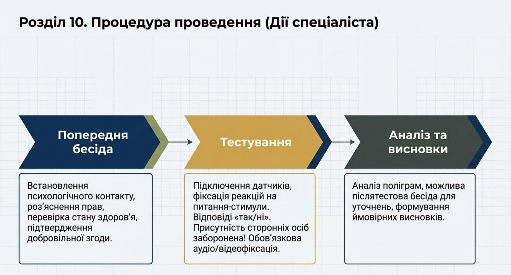
Безпосереднє проведення ПФДЗП є виключною компетенцією спеціаліста поліграфа. Нижче надано загальну інформацію про етапи процедури для розуміння ініціаторами та іншими посадовими особами загальної послідовності дій.
10.1. Попередня бесіда
Перед початком тестування спеціаліст проводить з суб'єктом попередню бесіду. Під час бесіди спеціаліст встановлює психологічний контакт, пояснює порядок проведення процедури, обговорює тематику питань та уточнює обставини, перевіряє відсутність медичних протипоказань та отримує підтвердження добровільної згоди суб'єкта. Бесіда є важливим етапом, який забезпечує психологічну готовність суб'єкта до процедури та створює умови для отримання достовірних результатів.
10.2. Тестування
Під час тестування спеціаліст встановлює на суб'єкта датчики поліграфа, пред'являє підготовлені питання (стимули) відповідно до обраної методики та реєструє психофізіологічні реакції. Проводиться необхідна кількість тестових серій для забезпечення достовірності. Під час тестування присутність сторонніх осіб, включаючи ініціатора, не допускається. Тривалість тестування залежить від складності завдання та кількості питань, що досліджуються.
Датчики поліграфа реєструють такі основні показники: параметри верхнього та нижнього дихання, електрошкірну активність (реакцію потових залоз), серцево-судинну активність (частоту пульсу, кров'яний тиск), а також рухову активність. Ці показники аналізуються комплексно, що підвищує достовірність висновків.
Спеціаліст самостійно визначає кількість тестових серій, необхідних для забезпечення достовірності. У разі виникнення технічних збоїв, сильного емоційного збудження суб'єкта або інших обставин, що можуть вплинути на якість реєстрації, спеціаліст має право призупинити або перенести тестування.
Весь процес тестування фіксується за допомогою аудіо- та/або відеозапису, що є складовою частиною матеріалів дослідження. Це забезпечує можливість контролю якості проведення процедури та захист прав як суб'єкта, так і спеціаліста.
10.3. Аналіз результатів та формулювання висновків
Після завершення тестування спеціаліст проводить аналіз зареєстрованих поліграм, інтерпретує дані відповідно до використаної методики та може провести післятестову бесіду для уточнення окремих реакцій. За результатами аналізу спеціаліст формулює ймовірні та орієнтувальні висновки, які фіксуються у довідці.
РОЗДІЛ 11. ОФОРМЛЕННЯ РЕЗУЛЬТАТІВ
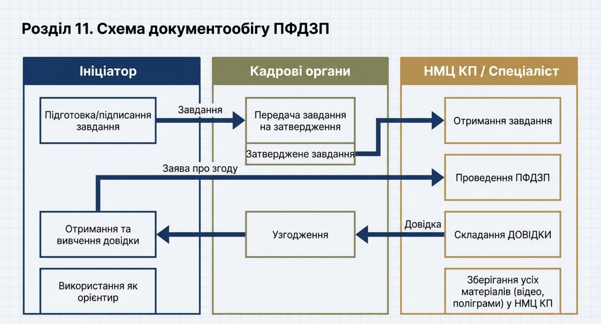
11.1. Довідка
Довідка є основним підсумковим документом ПФДЗП. Вона готується спеціалістом поліграфа за формою, визначеною Інструкцією, та містить: дані про суб'єкта, підстави та мету проведення, відомості про обладнання та методику, ймовірні та орієнтувальні висновки, а також обов'язкове застереження про характер результатів. Зразок форми довідки наведено у додатку Б.
Довідка складається у двох примірниках: один надається ініціатору, другий зберігається у матеріалах дослідження у структурному підрозділі НМЦ КП. Довідка підписується спеціалістом поліграфа, який безпосередньо проводив дослідження.
Ймовірні та орієнтувальні висновки формулюються спеціалістом на підставі аналізу зареєстрованих психофізіологічних реакцій. Висновки мають бути чіткими, зрозумілими та відповідати обсягу питань, визначених у завданні. Спеціаліст не формулює правових або дисциплінарних висновків — він лише зазначає, чи виявлено реакції, що свідчать про невідповідність між заявленою суб'єктом інформацією та його психофізіологічними показниками.
Обов'язковим елементом довідки є застереження про те, що результати мають ймовірний та орієнтувальний характер і не тягнуть за собою правових наслідків. Це застереження є не формальністю, а принциповим положенням, що визначає правовий статус результатів.
11.2. Порядок передачі
Довідка передається ініціатору або уповноваженій ним особі в порядку, що забезпечує конфіденційність. Передача здійснюється під підпис, із зазначенням дати отримання. Спеціаліст за потреби може надати усні пояснення щодо змісту висновків.
Усні пояснення спеціаліста носять допоміжний характер і спрямовані на забезпечення правильного розуміння ініціатором змісту довідки. Спеціаліст не надає рекомендацій щодо кадрових або адміністративних рішень — це є виключною компетенцією ініціатора та інших уповноважених посадових осіб.
Матеріали дослідження (поліграми, аудіо- та відеозаписи, завдання, заяви) зберігаються у структурному підрозділі НМЦ КП. Ініціатору передається лише довідка. Доступ ініціатора до інших матеріалів дослідження можливий у порядку, визначеному Інструкцією.
У разі, якщо дослідження не було проведено (через відмову суб'єкта, виявлення медичних протипоказань або з інших причин), спеціаліст поліграфа інформує про це ініціатора із зазначенням причини.
РОЗДІЛ 12. ЗБЕРІГАННЯ ТА ВИКОРИСТАННЯ РЕЗУЛЬТАТІВ
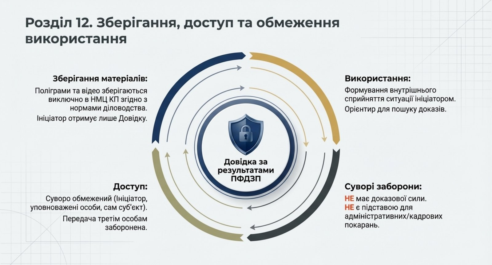
12.1. Конфіденційність
Інформація про факт, хід та результати ПФДЗП є конфіденційною. Доступ до неї мають лише особи, визначені Інструкцією. Розголошення тягне відповідальність згідно із законодавством. Ініціатор, спеціаліст та інші учасники процесу зобов'язані вживати заходів для запобігання несанкціонованому доступу до матеріалів.
12.2. Зберігання
Матеріали дослідження зберігаються у структурному підрозділі НМЦ КП. Строк та порядок зберігання визначаються Інструкцією та нормативно-правовими актами з діловодства. Знищення матеріалів здійснюється у встановленому порядку після закінчення строку зберігання.
12.3. Використання
Результати використовуються виключно як відомості ймовірного та орієнтувального характеру. Вони не тягнуть правових наслідків, не можуть бути підставою для прийняття адміністративно-управлінських рішень щодо суб'єкта, не мають доказової сили, а лише орієнтують на здобуття доказів у порядку, передбаченому законодавством. Результати використовуються для формування у посадових осіб внутрішнього сприйняття ситуації.
Практичне застосування результатів може полягати у такому:
- при прийнятті кадрових рішень — результати дозволяють ініціатору сформувати більш повне уявлення про кандидата або особу, що перевіряється. За наявності зон невідповідності ініціатор може ініціювати додаткову перевірку за допомогою інших засобів;
- при службових розслідуваннях — результати орієнтують на напрямки подальшої перевірки, допомагають визначити коло осіб для поглибленого вивчення обставин;
- при оцінці достовірності інформації — результати сигналізують про можливу невідповідність між заявленими відомостями та фактичним станом справ, що стимулює отримання додаткових підтверджень.
У жодному з цих випадків результати не є самодостатнім підтвердженням або спростуванням будь-яких фактів. Вони лише доповнюють загальну картина та допомагають ініціатору визначити пріоритети подальших дій.
12.4. Доступ
Доступ до результатів мають ініціатор та посадові особи, визначені Інструкцією. Суб'єкт дослідження має право на отримання відомостей про результати у передбаченому порядку. Передача результатів третім особам, не визначеним Інструкцією, не допускається.
РОЗДІЛ 13. ЕТИЧНІ ТА ПРАВОВІ АСПЕКТИ
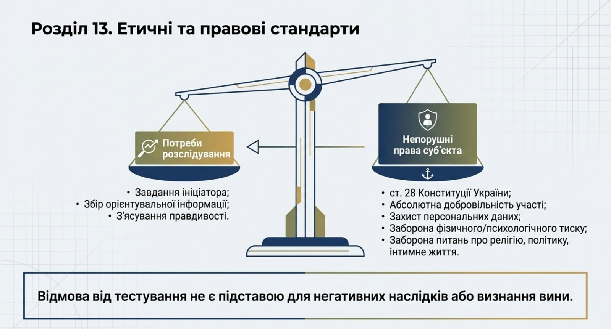
13.1. Дотримання прав людини
Під час організації та проведення ПФДЗП забезпечується неухильне дотримання прав і свобод людини, гарантованих Конституцією України, Конвенцією про захист прав людини і основоположних свобод та іншими міжнародними зобов'язаннями. Не допускається втручання у приватне та сімейне життя, посягання на свободу думки, совісті та релігії, дії, що загрожують недоторканності особи або принижують її честь і гідність, а також застосування будь-яких форм фізичного чи психологічного тиску.
Спеціаліст поліграфа зобов'язаний запобігати можливим негативним наслідкам своєї професійної діяльності та не допускати будь-яких дій, що можуть завдати шкоди діловій репутації суб'єкта.
13.2. Добровільність
Принцип добровільності є фундаментальною гарантією прав суб'єкта. Жодна особа не може бути примушена до проходження ПФДЗП. Відмова не є підставою для негативних наслідків. Водночас факт відмови може бути врахований посадовою особою при формуванні внутрішнього сприйняття ситуації в межах, що не порушують прав особи.
13.3. Захист персональних даних
Персональні дані суб'єкта, отримані під час дослідження, обробляються та зберігаються відповідно до Закону України «Про захист персональних даних». Спеціаліст та інші особи, що мають доступ до матеріалів, зобов'язані запобігати несанкціонованому доступу до персональних даних, їх поширенню або використанню в цілях, не передбачених Інструкцією. Обробка персональних даних здійснюється виключно в обсязі, необхідному для досягнення мети дослідження.
До персональних даних, що обробляються під час ПФДЗП, належать: анкетні дані суб'єкта (прізвище, ім'я, по батькові, звання, посада), інформація про стан здоров'я, зафіксовані психофізіологічні показники (поліграми), аудіо- та відеозаписи процедури, а також зміст відповідей суб'єкта на запитання спеціаліста.
Особливу увагу слід приділяти захисту електронних носіїв інформації, на яких зберігаються матеріали дослідження. Доступ до електронних носіїв має бути обмежений та контрольований. Передача матеріалів каналами зв'язку, що не забезпечують належного рівня захисту, не допускається.
РОЗДІЛ 14. ОБМЕЖЕННЯ ЗАСТОСУВАННЯ ПОЛІГРАФА
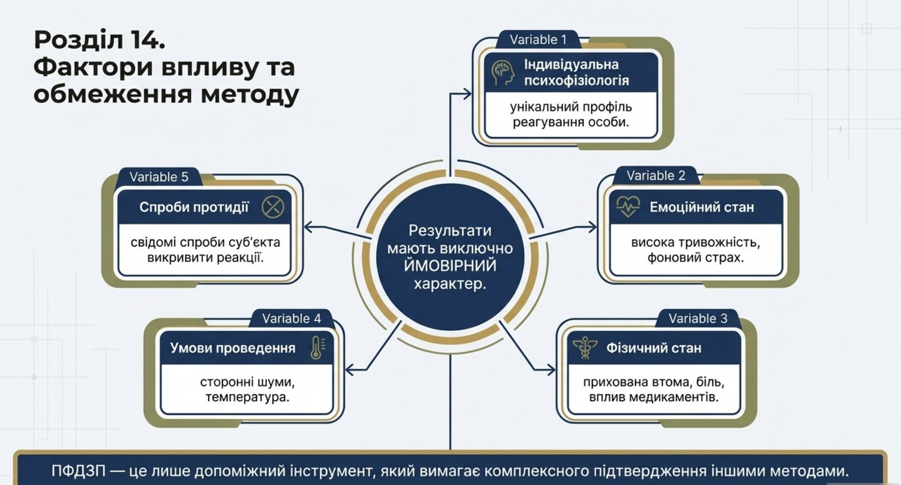
Посадовим особам, які є ініціаторами та користувачами результатів ПФДЗП, необхідно чітко розуміти обмеження, притаманні цьому методу. Некоректне розуміння природи результатів може призвести до хибних висновків та порушення прав суб'єкта.
14.1. Ймовірний характер
Висновки спеціаліста мають ймовірний характер. Вони відображають оцінку зареєстрованих психофізіологічних реакцій і не є абсолютно точним встановленням факту. На результати можуть впливати індивідуальні особливості суб'єкта, його емоційний стан, зовнішні фактори, прийом медичних препаратів, стресові обставини та інші чинники.
14.2. Орієнтувальний характер
Результати є орієнтувальними — вони спрямовують посадову особу на формування сприйняття ситуації та вказують на напрямки для подальшої перевірки. Результати не замінюють інші джерела інформації та мають розглядатися у сукупності з іншими наявними даними.
14.3. Допоміжний характер
ПФДЗП є допоміжним інструментом. Неприпустимо: приймати кадрові або адміністративні рішення виключно на підставі результатів дослідження; використовувати результати як доказ у дисциплінарних або адміністративних провадженнях; тлумачити результати як підтвердження вини або невинуватості особи; розглядати результати як остаточний висновок щодо достовірності інформації.
Будь-які рішення щодо суб'єкта мають ґрунтуватися на сукупності перевірених фактів та обставин, отриманих у встановленому законодавством порядку.
14.4. Фактори, що можуть впливати на результати
Ініціаторам та іншим посадовим особам слід розуміти, що на результати ПФДЗП можуть впливати різноманітні фактори:
- індивідуальні психофізіологічні особливості суб'єкта — кожна людина має унікальний профіль реагування, що може впливати на інтерпретацію даних;
- емоційний стан суб'єкта — підвищена тривожність, стрес, страх, пов'язаний не з обставинами дослідження, а з іншими чинниками, може спотворювати реакції;
- фізичний стан — втома, біль, загальне нездужання, дія медичних препаратів можуть впливати на якість реєструємих показників;
- умови проведення — сторонні шуми, неналежна температура приміщення, інші відволікаючі фактори можуть позначитися на результатах;
- спроби протидії — суб'єкт може намагатися вплинути на результати за допомогою фізичних або психологічних прийомів, хоча сучасні методики та канал виявлення протидії дозволяють у більшості випадків виявити такі спроби.
Саме з огляду на ці фактори результати ПФДЗП мають ймовірний та орієнтувальний характер і не можуть розглядатися як безспірне джерело інформації. Спеціаліст поліграфа враховує ці фактори під час аналізу та інтерпретації, проте повністю виключити їх вплив неможливо.
14.5. Рекомендації щодо інтерпретації результатів
Ініціатору при ознайомленні з довідкою рекомендується:
- уважно вивчити всі ймовірні та орієнтувальні висновки, не обмежуючись загальним підсумком;
- за потреби звернутися до спеціаліста за усними поясненнями для кращого розуміння контексту висновків;
- зіставити результати з іншими наявними даними та обставинами;
- утриматися від поспішних висновків та рішень на основі лише результатів ПФДЗП;
- у разі виявлення зон невідповідності — ініціювати додаткову перевірку за допомогою інших законних методів та засобів.
РОЗДІЛ 15. ПРИКІНЦЕВІ ПОЛОЖЕННЯ
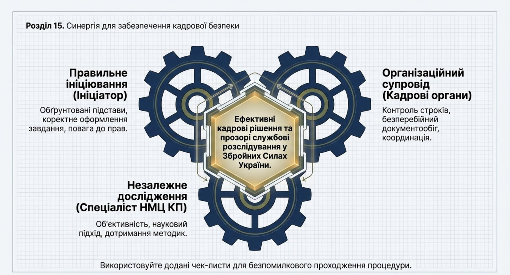
Психофізіологічне дослідження із застосуванням поліграфа є важливим елементом системи забезпечення кадрової безпеки Міністерства оборони Україні та Збройних Сил України. За умови правильної організації, чіткого дотримання визначених процедур та коректного розуміння обмежень, цей інструмент здатний суттєво підвищити якість кадрових рішень та ефективність службових розслідувань.
Ефективність ПФДЗП безпосередньо залежить від злагодженої взаємодії всіх учасників процесу. Ініціатор повинен забезпечити обґрунтованість та правильне оформлення завдання, кадрові органи — організаційний супровід, спеціаліст поліграфа — професійне та об'єктивне проведення дослідження. Кожен учасник зобов'язаний знати свої повноваження, дотримуватися прав суб'єкта та забезпечувати конфіденційність.
Цей посібник є практичним інструментом для посадових осіб. Він підлягає перегляду та оновленню у разі внесення змін до Інструкції або інших нормативно-правових актів. У разі виникнення питань щодо організації дослідження рекомендується звертатися до структурного підрозділу НМЦ КП МО України.
Відповідальність за дотримання вимог Інструкції та цього посібника покладається на посадових осіб відповідно до їхніх повноважень та функціональних обов'язків.
Для підвищення ефективності організації ПФДЗП рекомендується:
- проводити періодичне ознайомлення посадових осіб, уповноважених бути ініціаторами, з порядком організації дослідження та актуальними змінами у нормативно-правовій базі;
- використовувати чек-лист (додаток Г) для контролю повноти виконання організаційних заходів;
- забезпечувати зворотний зв'язок між ініціаторами та структурним підрозділом НМЦ КП для удосконалення процедурних аспектів;
- узагальнювати практику проведення досліджень для виявлення типових проблем та розроблення рекомендацій щодо їх усунення.
Психофізіологічне дослідження із застосуванням поліграфа, за умови належної організації та коректного використання результатів, залишається цінним інструментом у забезпеченні кадрової безпеки держави в умовах сучасних безпекових викликів.
Додаток А
Форма завдання на проведення дослідження
ЗАТВЕРДЖУЮ
(посада, звання, підпис, ініціали, прізвище)
«___» __________________ 20__ року
ЗАВДАННЯ
на проведення психофізіологічного дослідження із застосуванням поліграфа
Суб'єкт дослідження (прізвище, ім'я, по батькові, звання, посада)
Підстава для проведення:
Мета дослідження:
Обставини, що підлягають з'ясуванню:
Орієнтовний перелік питань:
Додаток Б
Форма довідки за результатами дослідження
ДОВІДКА
про результати психофізіологічного дослідження із застосуванням поліграфа
від «___» __________________ 20__ року
Суб'єкт дослідження (П.І.Б., звання, посада)
Підстава (реквізити завдання)
Дата та місце проведення:
Використане обладнання:
Застосована методика:
Ймовірні та орієнтувальні висновки:
Додаток В
Пам'ятка суб'єкту дослідження
ПАМ'ЯТКА
для особи, яка проходить психофізіологічне дослідження із застосуванням поліграфа
- Що таке поліграф? Поліграф — це комп'ютерний прилад, який безпечно реєструє зміни фізіологічних показників (дихання, серцево-судинна активність) під час відповідей на запитання. Датчики не завдають жодних болісних відчуттів.
- Ваші права. Ви маєте право: добровільно погодитися або відмовитися; відмовитися від продовження на будь-якому етапі; отримати інформацію про результати.
- Характер результатів. Результати мають орієнтувальний характер, не мають доказової сили і не є підставою для правових чи кадрових рішень.
- Як підготуватися. Виспіться (6–8 годин). Уникайте перевантажень. За дві доби не вживайте алкоголь та психотропні препарати. Обмежте кофеїн. Прибудьте не натще, за 10–15 хвилин до початку з документом, що посвідчує особу.
- Порядок проведення. Включає: попередню бесіду, тестування (відповіді "так" чи "ні") та можливу післятестову бесіду. Присутність сторонніх осіб заборонена.
- Характер запитань. Запитання стосуються професійної діяльності. Запитання щодо інтимного життя, політики та релігії — заборонені.
- Обмеження. Не проводиться при: гострих захворюваннях, болю, інтоксикації, дихальній недостатності, вагітності (крім випадків власної ініціативи).
- Конфіденційність. Інформація про хід та результати є суворо конфіденційною згідно із законодавством.
Додаток Г
Чек-лист організації дослідження для ініціатора
ЧЕК-ЛИСТ
організації дослідження для ініціатора
| № | Захід | Так | Ні |
|---|---|---|---|
| 1. | Визначено наявність підстав для проведення ПФДЗП відповідно до Інструкції | ||
| 2. | Обрано відповідний напрям дослідження (кадрові рішення / службове розслідування) | ||
| 3. | Сформульовано конкретні обставини, що підлягають з'ясуванню | ||
| 4. | Визначено орієнтовний перелік питань | ||
| 5. | Визначено суб'єкта та перевірено його відповідність вимогам | ||
| 6. | Підготовлено завдання за встановленою формою (кадрова / службове розслідування) | ||
| 7. | Завдання підписано ініціатором | ||
| 8. | Завдання подано на затвердження у встановленому порядку | ||
| 9. | Завдання затверджено та направлено до структурного підрозділу НМЦ КП | ||
| 10. | Суб'єкта поінформовано про порядок та його права (надано пам'ятку) | ||
| 11. | Отримано від суб'єкта власноручну заяву про добровільну згоду | ||
| 12. | Перевірено відсутність очевидних медичних протипоказань | ||
| 13. | Узгоджено час та місце проведення зі спеціалістом поліграфа | ||
| 14. | Надано спеціалісту необхідні документи та матеріали | ||
| 15. | Забезпечено своєчасне прибуття суб'єкта до місця проведення | ||
| 16. | Узгоджено перелік питань зі спеціалістом поліграфа | ||
| 17. | Отримано довідку з результатами дослідження | ||
| 18. | Забезпечено конфіденційне зберігання матеріалів та результатів |